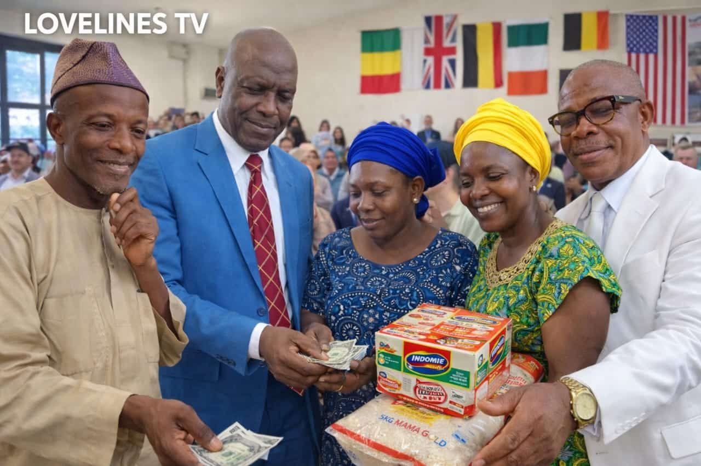
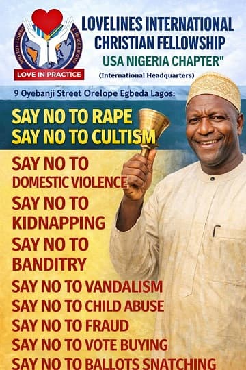
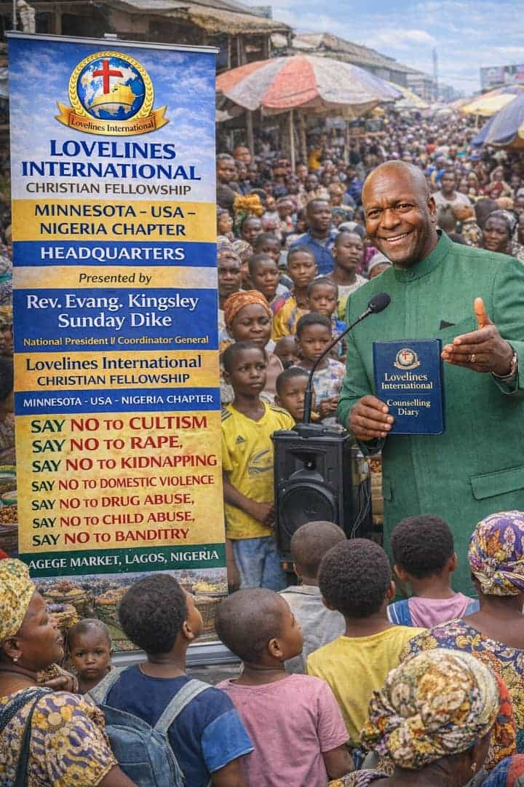

Our Programs & Impact
Transforming lives through humanitarian service, counseling, empowerment, and Christ-centered outreach across nations.
What We Do
Lovelines International Christian Fellowship is committed to restoring dignity, healing hearts, and empowering vulnerable individuals through structured programs that address real human needs.
Humanitarian & Relief Services
- Food distribution to vulnerable families
- Clothing and essential supplies
- Emergency relief outreach
- Support for displaced persons (IDPs)
Counseling & Emotional Support
- Individual and family counseling
- Trauma and grief recovery
- Youth mentoring programs
- Faith-based emotional healing
Care for the Vulnerable
- Support for widows and orphans
- Prison and hospital visitations
- Care for elderly and disabled
- Rehabilitation support
Community Development
- Skill acquisition programs
- Youth and women empowerment
- Educational support
- Health awareness campaigns
Advocacy & Awareness
- Anti-abuse campaigns
- Drug awareness programs
- Peace-building initiatives
- Community sensitization
Faith & Spiritual Development
- Prayer and intercession
- Biblical counseling
- Leadership development
- Evangelism and outreach missions
Humanitarian Outreach (Food Distribution)

Love in Practice at Arena Market Oshodi Lagos

Love in Practice at Lovelines International Christian Fellowship, Minnesota (USA)-Ngiria Chapter

Love in Practice at Iyana Ejigbo City Lagos

Love in Practice at Surelere Lagos Nigeria
Our Global Impact
With presence in nearly 200 countries, Lovelines International Christian Fellowship continues to bring hope to the hopeless, healing to the broken, and support to the vulnerable.
200+
Countries Reached
1000+
Lives Impacted
Ongoing
Humanitarian Projects
Our Impact in Action
LOVE IN ACTION
LOVE IN ACTION: Appreciations and prayers
Counseling & Emotional Support




Be Part of the Mission
Whether through volunteering, partnership, or sponsorship, you can help us bring love into action and transform lives globally.